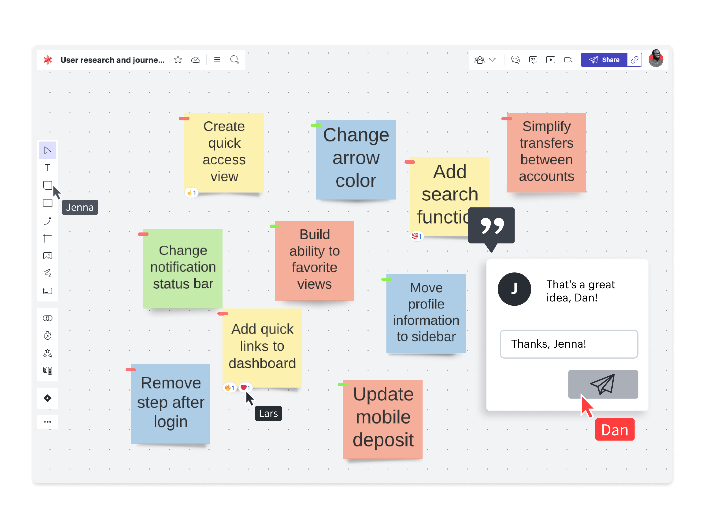

Collaboration Fluide
Brisez les silos et travaillez ensemble, où que vous soyez.

Description détaillée
La communication est au cœur de NovaFlow. Commentez les tâches, partagez des fichiers et mentionnez vos collègues sans jamais quitter votre espace de travail. Tout l'historique est conservé au même endroit.
Avantages clés
- Chat intégré par projet
- Partage de fichiers sécurisé
- Notifications personnalisables
- Historique des modifications complet
Pourquoi c'est utile ?
Évitez les fils d'e-mails interminables et les informations perdues. En centralisant la communication autour des tâches concrètes, vous assurez que tout le monde dispose du même niveau d'information en temps réel.